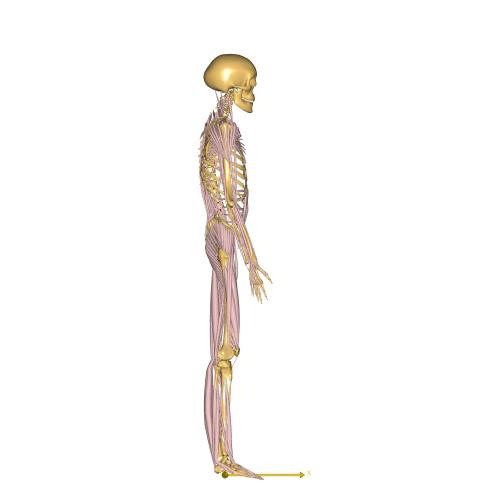
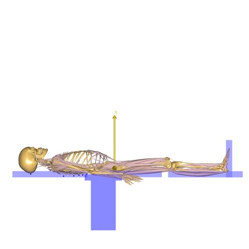
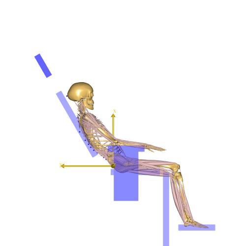
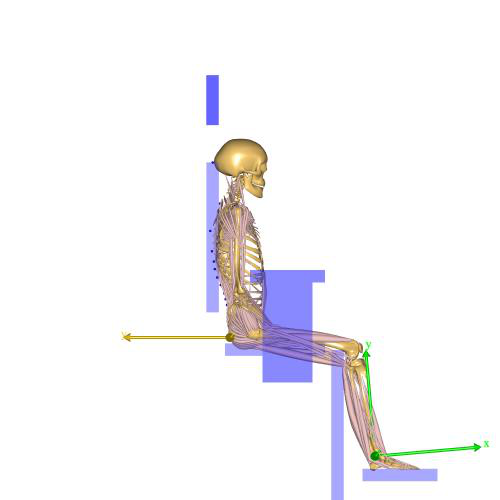
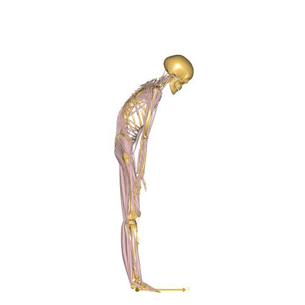
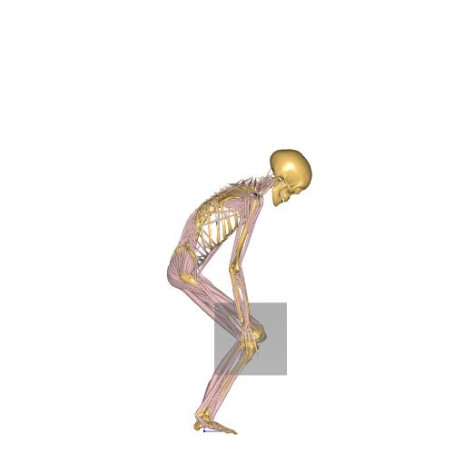
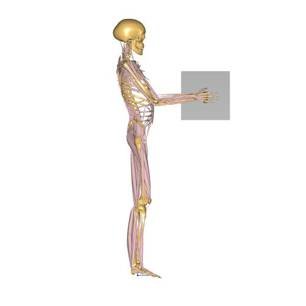

Wilke Spine Disc Pressure Model¶
The Wilke Spine Pressure models are eight models that compare intradiscal pressure measured between L4 and L5 discs in different postures.
See also
Model location in AMMR:
For the comparison, all data is normalized (100 %) to the forces from ‘SpinePressureStanding.Main.any’ and ‘Relaxed Standing’ to show trend validity between the various postures.
Both papers refer to the same trial, but supplements each other with study information.
Wilke, H.J., Neef, P., Caimi, M., Hoogland, T., Claes, L.E., 1999. New in vivo measurements of pressures in the intervertebral disc in daily life. Spine 24, 755–762.
Wilke, H., Neef, P., Hinz, B., Seidel, H., Claes, L., 2001. Intradiscal pressure together with anthropometric data–a data set for the validation of models. Clin. Biomech. 16 Suppl 1, S111–26.
‘Relaxed Standing’ compared with ‘SpinePressureStanding.Main.any’.
‘Lying in prone’ compared with ‘SpinePressureLyingOnBack.main.any’.
‘Seating relaxed’ compared with ‘SpinePressureSeatingRelaxed.main.any’
‘Relaxed Erect Sitting’ compared with ‘SpinePressureSeatingStraitNoSupport.main.main.any’
‘Standing flexed foward’ compared with ‘SpinePressurestandingflexed.main.any’
‘Crate of beer held close at chest level’ compared with ‘SpinePressurestandingliftclose.main.any’

‘Lifting bent over with round back’ compared with ‘SpinePressurestandingliftflexed.main.any’
‘’Held away about 60 cm’ compared with ‘SpinePressurestandingliftstretched arms.main.any’
